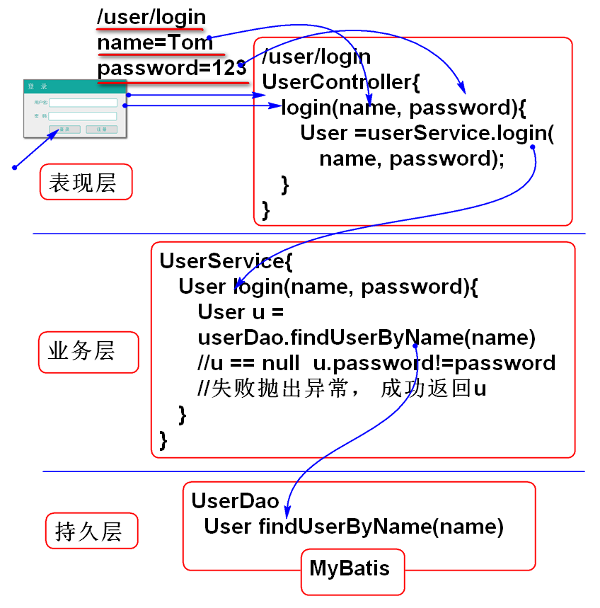
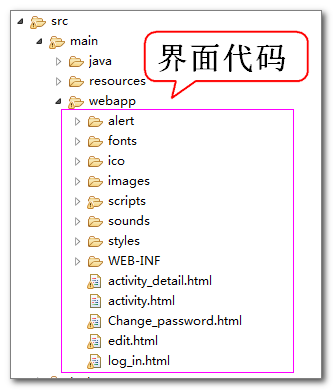

设计思路：

实现步骤：
添加持久层方法 UserDao.java:
User findUserByName(String name);
添加SQL语句： UserMapper.xml:
<select id="findUserByName"
parameterType="string"
resultType="cn.tedu.note.entity.User">
select
cn_user_id as id,
cn_user_name as name,
cn_user_password as password,
cn_user_token as token,
cn_user_nick as nick
from
cn_user
where
cn_user_name=#{name}
</select>
测试：
@Test
public void testFindUserByName(){
UserDao dao = ctx.getBean(
"userDao", UserDao.class);
String name="Tom";
User user=dao.findUserByName(name);
System.out.println(user);
}
添加业务层接口： UserService.java
public interface UserService {
User login(String name, String password)
throws UserNameException,
PasswordException;
}
实现业务方法：
@Service("userService")
public class UserServiceImpl
implements UserService{
@Autowired
private UserDao userDao;
public User login(String name,
String password)
throws UserNameException,
PasswordException {
//检验输入参数的合理性
if(name==null||name.trim().isEmpty()){
throw new UserNameException("名不能空");
}
String reg = "^\\w{3,10}$";
if(! name.matches(reg)){
throw new UserNameException("不合规");
}
if(password==null||password.trim().isEmpty()){
throw new PasswordException("不能空");
}
if(! password.matches(reg)){
throw new PasswordException("不合规");
}
//查询用户数据
User user=userDao.findUserByName(name);
if(user==null){
throw new UserNameException("错误");
}
if(user.getPassword().equals(password)){
//业务处理
//登录成功，返回用户信息
return user;
}
throw new PasswordException("密码错");
}
}
建议：合理检验输入参数！！！
添加Spring配置文件，初始化userService组件，spring-service.xml：
<?xml version="1.0" encoding="UTF-8"?>
<beans xmlns="http://www.springframework.org/schema/beans"
xmlns:xsi="http://www.w3.org/2001/XMLSchema-instance"
xmlns:context="http://www.springframework.org/schema/context"
xmlns:jdbc="http://www.springframework.org/schema/jdbc"
xmlns:jee="http://www.springframework.org/schema/jee"
xmlns:tx="http://www.springframework.org/schema/tx"
xmlns:aop="http://www.springframework.org/schema/aop"
xmlns:mvc="http://www.springframework.org/schema/mvc"
xmlns:util="http://www.springframework.org/schema/util"
xmlns:jpa="http://www.springframework.org/schema/data/jpa"
xsi:schemaLocation="
http://www.springframework.org/schema/beans http://www.springframework.org/schema/beans/spring-beans-3.2.xsd
http://www.springframework.org/schema/context http://www.springframework.org/schema/context/spring-context-3.2.xsd
http://www.springframework.org/schema/jdbc http://www.springframework.org/schema/jdbc/spring-jdbc-3.2.xsd
http://www.springframework.org/schema/jee http://www.springframework.org/schema/jee/spring-jee-3.2.xsd
http://www.springframework.org/schema/tx http://www.springframework.org/schema/tx/spring-tx-3.2.xsd
http://www.springframework.org/schema/data/jpa http://www.springframework.org/schema/data/jpa/spring-jpa-1.3.xsd
http://www.springframework.org/schema/aop http://www.springframework.org/schema/aop/spring-aop-3.2.xsd
http://www.springframework.org/schema/mvc http://www.springframework.org/schema/mvc/spring-mvc-3.2.xsd
http://www.springframework.org/schema/util http://www.springframework.org/schema/util/spring-util-3.2.xsd">
<!-- 扫描到控制器组件 -->
<context:component-scan
base-package="cn.tedu.note.service"/>
</beans>
测试：
public class UserServiceTestCase {
ClassPathXmlApplicationContext ctx;
@Before
public void init(){
ctx = new ClassPathXmlApplicationContext(
"spring-web.xml",
"spring-mybatis.xml",
"spring-service.xml");
}
@Test
public void testLogin(){
UserService service=ctx.getBean(
"userService",
UserService.class);
String name="Tom";
String password="123";
User user = service.login(
name, password);
System.out.println(user);
}
}
提示： 应该对全部流程进行全面覆盖测试。
添加控制器类：
@Controller
@RequestMapping("/user")
public class UserController {
@Resource
private UserService userService;
@RequestMapping("/login.do")
@ResponseBody
public JsonResult<User> login(String name,
String password){
try{
User user =
userService.login(name, password);
return new JsonResult<User>(user);
}catch(PasswordException e){
e.printStackTrace();
return new JsonResult<User>(3,e);
}catch(UserNameException e){
e.printStackTrace();
return new JsonResult<User>(2,e);
}catch(Exception e){
e.printStackTrace();
return new JsonResult<User>(e);
}
}
}
添加JsonResult 用于封装，Json返回值
public class JsonResult<T>
implements Serializable{
private static final long serialVersionUID = -7330453556127986084L;
public static final int SUCCESS=0;
public static final int ERROR=1;
private int state;
private T data;
private String message;
public JsonResult() {
}
public JsonResult(T t){
state = SUCCESS;
data = t;
message="";
}
public JsonResult(Throwable e){
state = ERROR;
data=null;
message = e.getMessage();
}
public JsonResult(int state,
Throwable e) {
this.state = state;
this.message = e.getMessage();
this.data = null;
}
public int getState() {
return state;
}
public void setState(int state) {
this.state = state;
}
public T getData() {
return data;
}
public void setData(T data) {
this.data = data;
}
public String getMessage() {
return message;
}
public void setMessage(String message) {
this.message = message;
}
}
部署到服务器进行测试：
正确测试：
http://localhost:8080/note/user/login.do?name=Tom&password=123
异常测试：
http://localhost:8080/note/user/login.do
在界面中用Jquery调用控制器, 实现登录功能。
将界面代码复制到项目中：

更新log_in.html, 添加脚本引用：
<script type="text/javascript"
src="scripts/jquery.min.js"></script>
<script type="text/javascript"
src="scripts/login.js"></script>
添加JS代码, 绑定界面组件控件 login.js:
$(function(){
//为登录按钮绑定单击事件
$('#login').click(loginAction);
$('#count').focus().blur(checkName);
$('#password').blur(checkPassword);
});
添加 用户名检查 方法：
function checkName(){
var name = $('#count').val();
if(name==null || name==""){
//提示错误
$('#count-msg').html('不能空');
return false;
}
var reg = /^\w{3,10}$/;
if(! reg.test(name)){
$('#count-msg').html('长度不对');
return false;
}
$('#count-msg').empty();
return true;
}
添加检查密码的方法：
function checkPassword(){
var password = $('#password').val();
if(password==null || password==""){
//提示错误
$('#password-msg').html('不能空');
return false;
}
var reg = /^\w{3,10}$/;
if(! reg.test(password)){
$('#password-msg').html('长度不对');
return false;
}
$('#password-msg').empty();
return true;
}
为了配合用户名和密码检查，在界面log_in.html上 用户名和密码框后面增加显示错误的标签span：
<span id="count-msg" class="error"></span>
<span id="password-msg" class="error"></span>
添加登录按钮事件方法：
//登录按钮的动作
function loginAction(){
console.log('login click!');
//收集用户名和密码数据
var name = $('#count').val();
var password = $('#password').val();
//验证用户名和密码
var pass = checkName()+checkPassword();
if(pass!=2){
return;
}
var paramter={'name':name,
'password':password};
//发送Ajax请求
$.ajax({
url:'user/login.do',
data:paramter,
dataType:'json',
type:'POST',
success:function(result){
//{state:0,data:, message}
if(result.state==0){//SUCCESS
console.log("SUCCESS");
console.log(result.data);
location.href='edit.html';
return;
}else if(result.state==2){
//用户名错误
$('#count-msg').html(result.message);
return;
}else if(result.state==3){
//密码错误
$('#password-msg').html(result.message);
return;
}
alert(result.message);
},
error:function(){
alert('Ajax请求失败');
}
});
}
测试：
实现登录功能。